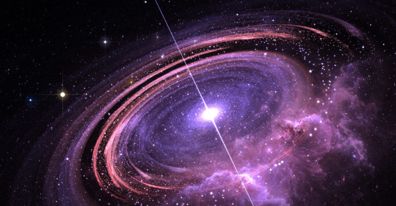
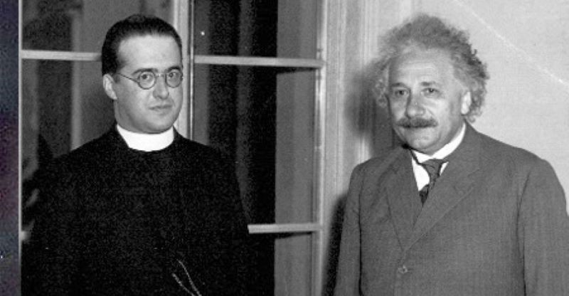
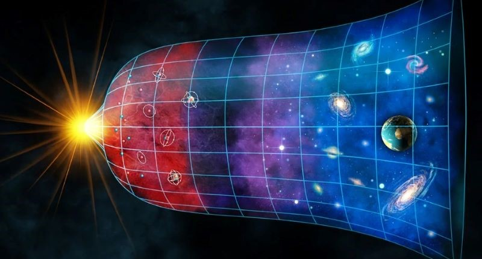
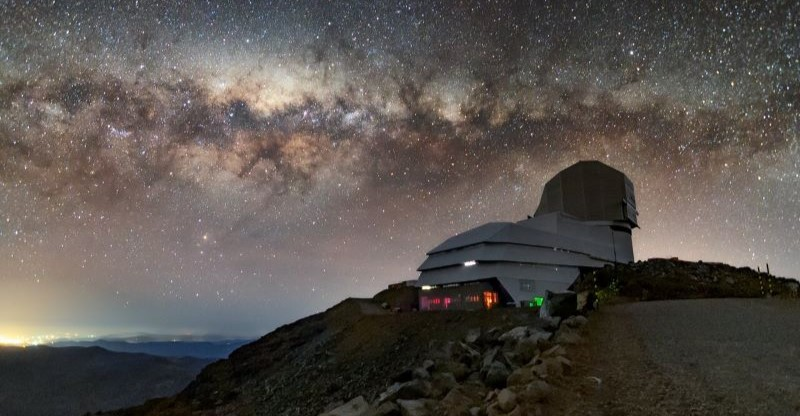
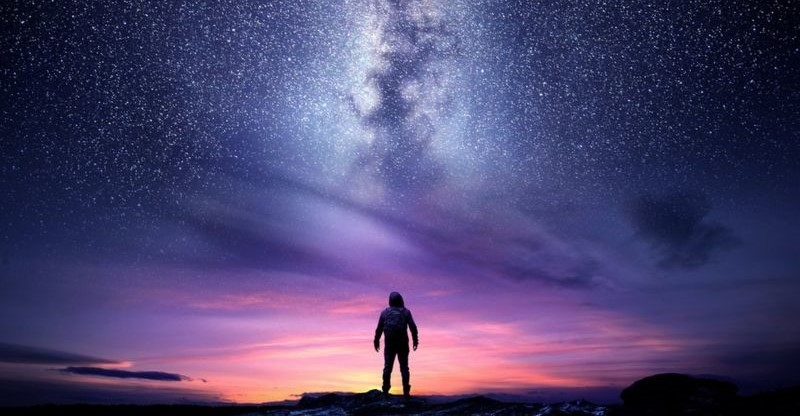

Poniendo el "Bang" al Big Bang
"¿Fue realmente un 'bang' o más bien un susurro que creó todo el universo?"
¿Que fue el Big Bang?
¿Puede una explosión inicial, hace 13.800 millones de años, dar forma a todo lo que conocemos, desde las estrellas hasta las galaxias? El Big Bang nos plantea la pregunta fundamental sobre el origen y la evolución de nuestro Universo: ¿Fue realmente un gran estallido o el inicio de una incesante expansión de misterios?
Historia y teoria de los autorores
¿Quién hubiera imaginado que un misterioso ruido de fondo, un eco cósmico, revelaría la explosión que dio origen a nuestro universo? El Big Bang, una idea desafiante en sus inicios, ahora se respalda con la radiación de fondo de microondas, una huella inmutable en el espacio y el tiempo, dejándonos reflexionar sobre los misterios del origen del cosmos.
Comprobacion de la teoria
¿Puede la ciencia moderna, con sus poderosas herramientas matemáticas y simulaciones por computadora, revelarnos la verdadera historia de nuestro universo? A medida que las pruebas y simulaciones confirman consistentemente la teoría del Big Bang, surge un consenso científico casi unánime, fortaleciendo aún más nuestra comprensión del origen y evolución del cosmos.
Situacion actual de la teoria
¿Cómo podemos dar respuesta a los enigmas que la teoría del Big Bang ha revelado, como la existencia de la materia oscura y la energía oscura? A medida que avanzamos con herramientas tecnológicas y proyectos colosales, estamos acercándonos a desvelar los misterios del cosmos, pero aún quedan preguntas sin respuesta, recordándonos que la búsqueda del conocimiento es un viaje sin fin en constante evolución.
Teorias alternativas
En un universo tan vasto y complejo, no es sorprendente que surjan ideas alternativas, desde las que desafían la teoría del Big Bang hasta las que incorporan creencias religiosas o teorías conspirativas. Estas perspectivas, ya sean basadas en la ciencia, la fe o la imaginación, nos recuerdan la profundidad de nuestro deseo de comprender el cosmos y explorar sus misterios, a veces llevándonos por caminos inexplorados y controvertidos en la búsqueda de la verdad.